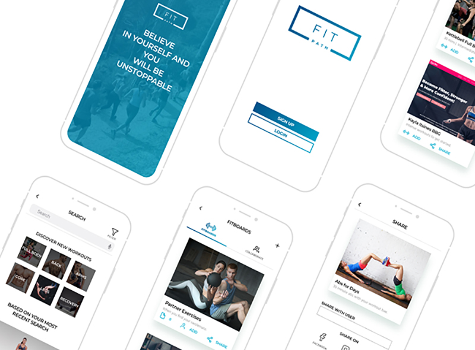
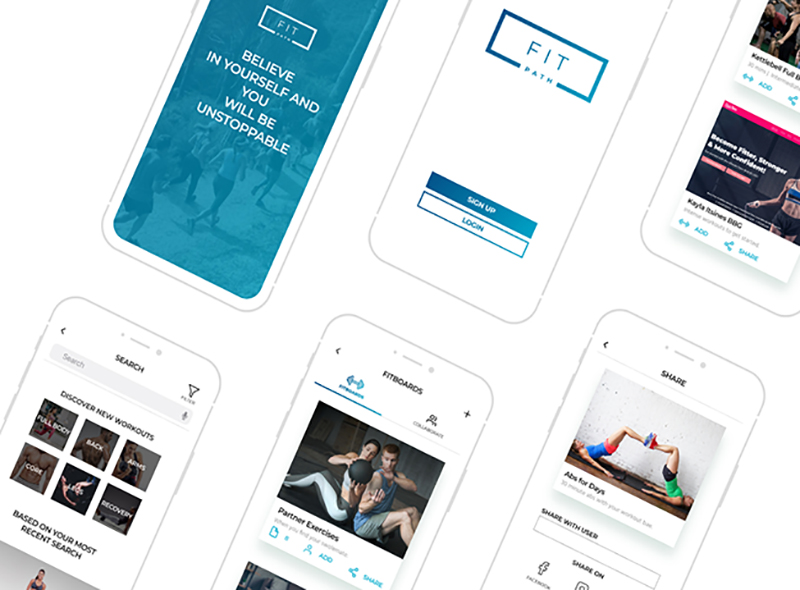
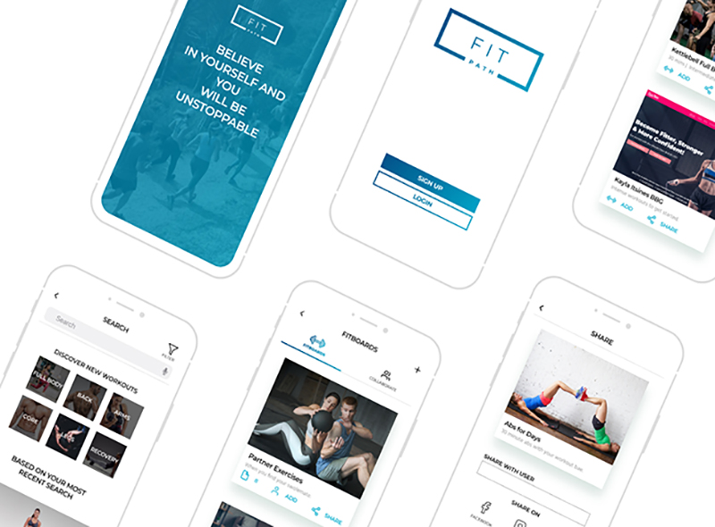
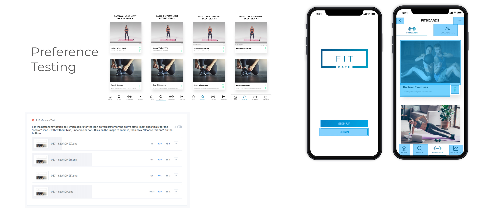

FitPath
The fitness application helping people of all ages and experiences easily discover the perfect workouts that fit their needs and goals.

The fitness application helping people of all ages and experiences easily discover the perfect workouts that fit their needs and goals.
Product Designer
UX Researcher
Content Strategist
UX Designer (UX Architect)
Visual Designer
Discovery & Strategy Phase
User Surveys
Competitive Analysis
User Personas
Tools
Figma
InVision
Maze
Draw.io
Usability Hub
Adobe Photoshop
Duration
10 weeks
When people start their fitness journey, for most, it takes years to figure out what they really like to do. FitPath, the fitness cloud storage & search engine was created to disrupt the fitness industry and allow people of all ages and experiences to easily discover their perfect workouts. With the help of AI and our database of workouts from all over the internet, FitPath will know exactly what users are enjoying so each new workout that you crush is better than the last.
The $30 billion health and fitness industry in the U.S. has been growing by at least 3-4% annually. With over 1 in 5 Americans belonging to at least one U.S. health club or studio, most people are intimidated by, or don’t know what to do when they first join a gym and/or start their fitness journey.
We created FitPath, an application to find workouts that fit their needs and goals. Our client wanted to enter the cloud storage & organizational market. In FitPath, workouts can be found within minutes, saved (into FitBoards), uploaded, shared, even and collaborated with trainers or other users in the form of videos, photos, documents, spreadsheets, and more.

I wanted to see how fitness enthusiasts, personal trainers, trainees, and other active people could benefit, so to learn about our target market, I created and sent a survey to my friends, fitness network, and other people on social media. I needed to learn:
This survey was completed with 15 surveyors. Here are some key results:
I ran a competitive analysis so that we understand our target market and competition. Since we were still brand new in figuring out what type of product to create in the “cloud storage and organization market”, I chose three different companies: Dropbox, Pinterest, and a makeup beauty search engine named Mira to understand what they are doing well, and what problems could improve on. Dropbox is strictly cloud storage, one pinning and saving imagery and content from all over the web, and the last uses AI and pulls from reviews all over the internet to find the best makeup for users.
“Dropbox is a place where all your team’s content comes together.”
Strengths
No need to carry around a thumb drive anymore; can share files via email
Simple and easy to use
Weakness
The low conversion rate for individual users - free to be a paid user. Users could easily use another free cloud storage
Cost per space is not as affordable to a general user
Opportunities
Always innovating and adding more features
Helps other businesses move towards working on the cloud - storing, organizing, and cross-collaboration
Threats
Large corporations like Google already have a user base integrated with all other applications such as Google Chrome, so the engagement is high for them to use Google Drive rather than Dropbox
A “visual discovery engine for finding ideas like recipes, home and style inspiration, and more.”
Strengths
Boards are versatile and can be made for any type of category and interests, and creates a visual perspective
Weaknesses
Seems to be geared more towards women, leaving the men out
Opportunities
Helps drive traffic to websites from pinning photos, helps grow and create new customers, website leads, ROI, and direct conversion.
Helps plan life moments, an ideal home, vacation, food/cooking, accessories, beauty products, watches, and jewelry
Threats
Pinterest’s biggest competitor is Amazon, but no other big competitor in this space
“The beauty search engine app” that uses facial recognition and artificial intelligence to help pair users with the right products and beauty needs.
Strengths
An application that helps find beauty products based on your needs using artificial intelligence.
Analyzes product reviews from all over the web to see if products are good or bad; and summarized for the user. Should be getting smarter as users begin posting questions and answering product reviews.
Weaknesses
Brand new, only on iOS
Opportunities
This seems like one of the first apps that pulls a lot of different products together into one space
Helps someone into beauty find reviews and the right prices in one place
Threats
It seemed like it took 2 years for the application to come out - in due time, will there be a competitor?
Taking all the information from our survey results, I analyzed the data and looked for patterns, trends, or outliers and created two personas to help put a name, face, and a backstory for all our potential users. By doing so, this helps better empathize with our users and understand the user’s goals, behaviors, and how they would interact with our application.
Age: 37
Occupation: Mom & Project Manager
Location: Bay Area, CA
Gender: Female
Motivations:
April is a very organized working professional and wears many hats. When she’s not at work, she’s’ at home ensuring her kids are taken care of. In order to make sure her kids are happy, she makes sure her and her husbands’ health, happiness, and lifestyle comes first. Finding a workout plan (thats already been done and successful) for her fitness level at home, or at the gym would help get her motivated and back into shape.
Goals:
1. To document and save their family photos, videos, etc and safekeep those memories.
2. To start again and stay healthy by exercising so they can live long lives for themselves and their children.
3. To surf the web to find inspiration for almost everything. Shares workouts with friends to save and work on later.
Age: 32
Occupation: Engineer
Location: Los Angeles, CA
Gender: Male
Motivations:
John stays connected to technology everyday. He stays up to date on what’s new, and uses cloud storage for almost everything at work: to share documents, pdfs, and also solutions for real-time collaboration with his teammates at work. After work, John goes to the gym and focuses on building muscle groups. His friends meet him there at the gym and they train together by doing a workout they found online, or if one of the friends put it together.
Goals:
1. To ensure his team at work stays up to date with the most updated files
2. To build muscle, endurance, and get stronger
3. Track fitness progress & also between friends
Creating user stories helped me create and prioritize tasks that must be accounted for in the application.
Creating user flows helps us understand how each item relates to other items on each page on a website or in an application. Look back at the surveys, user personas, competitive analysis, user stories to help create these user flows.
Anything at high priority from the user stories, I created a user flow and sketch before turning them to digital. I even included lower to medium user stories - but just enough for the MVP minimum viable product.
I learned that as you go along the design process, any step of the way, like the user flows, don’t have to be set in stone, they could also change too after you build out wireframes.
At this point, I decided this is going to be a mobile application because when people workout, what devices do you usually see with them? Typically, I see them with mobile devices, if anything at all. Do we see people working out at the gym with their laptops? (I would like to build one in the roadmap ahead, but for now we will start with a mobile app).
The Content Strategy phase helped build an overview map of how the application would work as well as help conceptualize what imagery I will use in the designs for implementing into the wireframes.
Click photo or link below to view larger.
It was important to visualize our application in wireframes before we begin building. What if something didn’t work? When I built out the wireframes and began testing, I found during this process there were too many onboarding screens, and the same “share” buttons. Throughout this process, I was able to refine the application.
We tested out our user stories, made iterations to both the wireframes and the user stories, and then created a clickable prototype in InVision, and then running usability testing on the wireframes to make any changes if users ran into any issues. I found my users were having issues finding the “more options” button on each individual workout, and one of the menus needed work, so I made changes on these menus.
For a long time throughout this process, this application remained nameless. I liked the idea of incorporating the word “fitness” and combining it with another word, so I created a mind mapping activity here which stems from the word “fitness” and goes to all these different ideas that I want to touch. Once the name FitPath ws born, I began sketching out logos.

I chose the name FitPath is because everyone goes on their own path, or journey. FitPath application allows you to find the best workouts that fit your needs - allowing you to make your path.
A suggested sloagan would be:
This FitPath logo has a rectangle around “FitPath” which represents the path of your fitness journey. Throughout your path, it doesn’t always have to be a linear line to your end goal, if in case life shifts or changes, you can make changes as necessary, as there isn’t just one way to get there.
I selected one of these logos and refined it with different fonts and weights. Looking at both fonts Montserrat and Roboto, I tested the logo with both.
Refining the logo took some time and was refined and finished after building the style guide.
Here are sketches of two possible options. Sketching helped get ideas down and took less than a minute to draw.
Here is the FitPath logo created and refined by using Figma & Adobe Illustrator.
Added a blue gradient and made the “Path” bolder and the size and weight of the outside outline
Style Guide is created to share the direction of styling for the new application, FitPath. This helps with passing information down to the developers and the rest of the team who will be working on it.
The message I want to send to my users every day is to live a balanced and healthy life. I want to help find an easy way for my users to get started and stay motivated on their fit journey, or whichever path they want to take.
I want the application to look clean, minimal, with a pop of color to be bright, but gender-neutral. I picked out typefaces, Monserrat and Hind, and chose colors in shades of blue.
Creating the style guide helped set a baseline and turn the wireframes into higher fidelity screens.
Click each photo below to enlarge.
In this stage I began to build high fidelity mockups. I re-iterated my wireframing process especially referencing the user flows and after user testing.
It took me a long time to transition into higher fidelity mockups going from empty wireframe squares to defined screens, but with the help of the style guide made consistency, and building them in Figma, it helped bring these screens to life.
I learned that the design process helps lay the foundation for the high fidelity mockups and skipping a step early on could lead us to many more revisions in this phase.

I went through a second round of testing, which both included preference testing and another clickable prototype. For Preference testing, I wanted to see where to include more branding colors on the application.
From my 2nd clickable prototype testing, I ran three tests using Invision and Maze - two in person and one remote. Most users seemed to go through properly. Some users commented on the colors, but the biggest hurdle was finding the aqua “more” button on the bottom right-hand side of each card. Most users did not know exactly what the icon does, click it, or would be able to find it. Also, I found some of the secondary text was a little small or too light for them to see, sothat was enlarged.
Based on the feedback from these two tests, here’s what I changed on the design:
• Added color to the navigation bars to empahsize which page they are on when selected
• Removed the “more” icon underneath each workout and added new buttons “Add” and “Share” to eliminate 1) ambiguity of the “more” icon and 2) an extra step/click for the user
• Enlarged some secondary text that was too small for readers, with maintaining heiarchy
With all the feedback from the users and lead designers, we then revised the finishing touches. The biggest patterns I learned from reiterations and feedback were three things:
1. To maintain pixel perfect consistency across each screen. This took a long time, given the number of screens made for this application.
2. Change the behavior of an aqua “more button” on the bottom right of the workouts to to a readible “add” and “share” clickable icon on each workout card.
This eliminated an extra menu, step, and thought process a user needed to go through.
The fitness application helping people of all ages and experiences easily discover the perfect workouts that fit their needs and goals.
Click photo to view larger
Our client wanted to create an application that enters in the cloud storage and oraganizational market. In this case study, FitPath, the fitness cloud storage & search engine was created to disrupt the fitness industry and allow people of all ages to easily discover their perfect workouts.
After going through the design process, our potential users helped shape the design of FitPath. Starting with the User Surveys, Usability Testing at different phases (Sketches, Wireframes, and visual mockups from Figma), the design shifted from analyzing our user's behaviors.
What surprised me the most was replacing an aqua icon that represented a "click here for more items" icon for an "Add" and "Share" icon directly underneath each workout. This icon's placement was shifted into different locations on our Wireframes and Mockups from feedback from our Usability Tests, and then eliminated by the final design. I identified the icon was hard for users to find and understand the functionality of the icon. Replacing the icon elimanted two extra taps/clicks for our users.
Currently, not all screens are built out, but the functionality is there. If more time was alotted, the visual prototype would be fully functional.
Hope you enjoyed this case study!